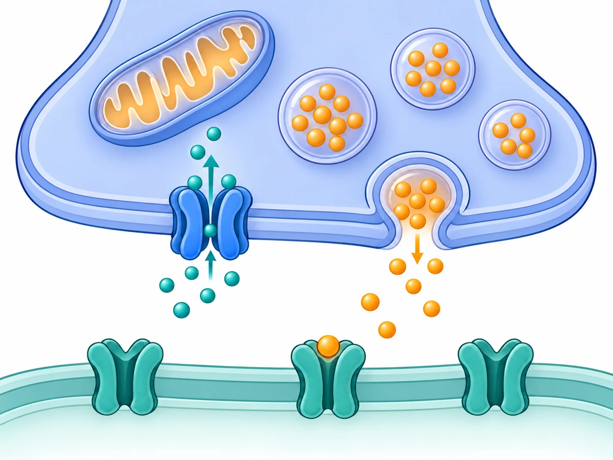
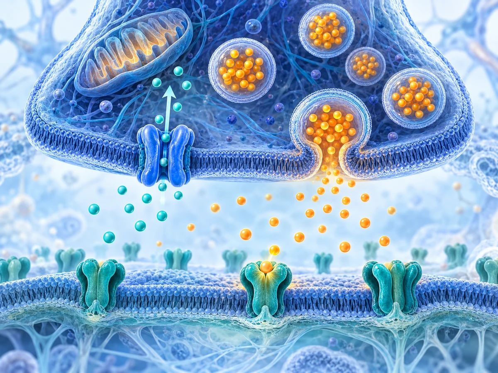

SIMPLIFIED
Focus on the mechanism.
Fewer textures, larger landmarks, and a clearer distinction between calcium entry and transmitter release.

Try this puzzle →
Notice how the channel, vesicles, and receptors look as individual pieces.
Compare the same synapse at two levels of detail. Both previews use the existing twelve-piece game and clinical questions.
Fewer textures, larger landmarks, and a clearer distinction between calcium entry and transmitter release.

Notice how the channel, vesicles, and receptors look as individual pieces.
Richer depth and texture, with more background structure competing for attention.

Notice whether the extra texture helps you place pieces or distracts from the biology.
Calcium entry helps trigger neurotransmitter release. Teal represents calcium; amber represents transmitter. These scenes show normal signaling. The clinical questions explain why CACNA1A variant effects require more careful interpretation.
Draft conceptual illustrations, generated with AI and pending scientific review. Shapes, colors, and scale are illustrative. Preview progress is saved separately from the main collection.
Open the main round →